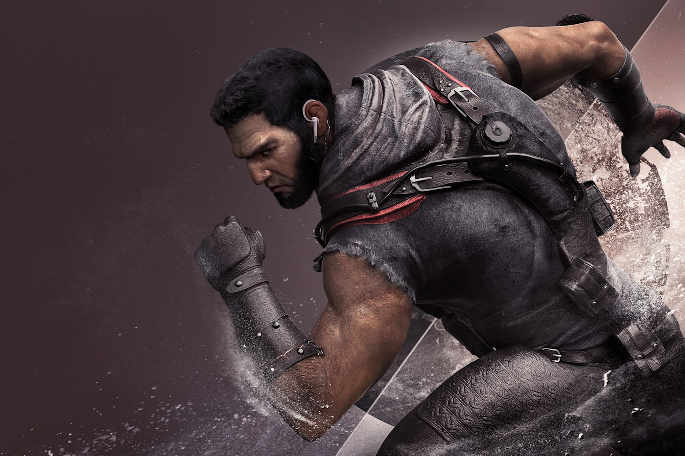

RAINBOW SEVEN SIEGE
NEW Mode
More on the
launch of new mode
"lights out"
Maps
learn various
the maps in
this game
Operator
check out the
operators that
suits your gameplay!
Pre-Order
Pre-Order
now!

ORYX
Oryx has the unique ability to interact with Hatches.
He can climb straight through for a quick rotation, or
he can hang on the edge of to peek
WARDEN
The Glance serve a function that was almost
non-existent on the Defender team. With its active,
Warden can see through smoke